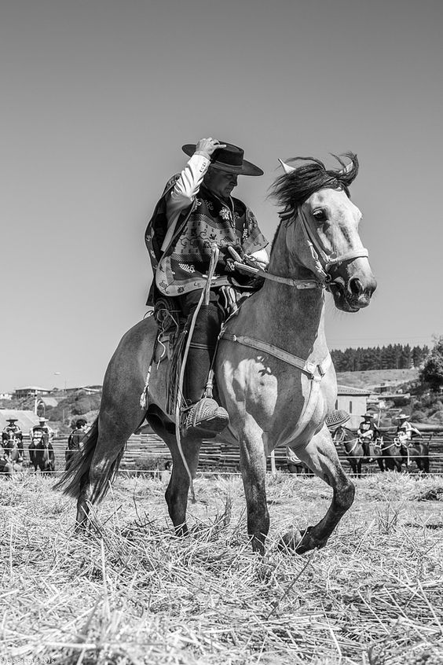

¡Bienvenido!
Hoy hablaremos del caballo chileno, es una raza equina originaria de Chile.
el caballo originario de Chile conocido por su resistencia, agilidad y temperamento dócil.
Son famosos por su participación en rodeos, donde demuestran su habilidad para trabajar con el ganado.
Tienen una estructura corporal maciza con piernas fuertes y musculosas, lo que los hace aptos para terrenos difíciles y largas jornadas de trabajo.
Los caballos chilenos también son populares en saltos, doma y otras disciplinas ecuestres.
Además de su utilidad en el trabajo y el deporte, son valorados por su belleza y su carácter amigable.
